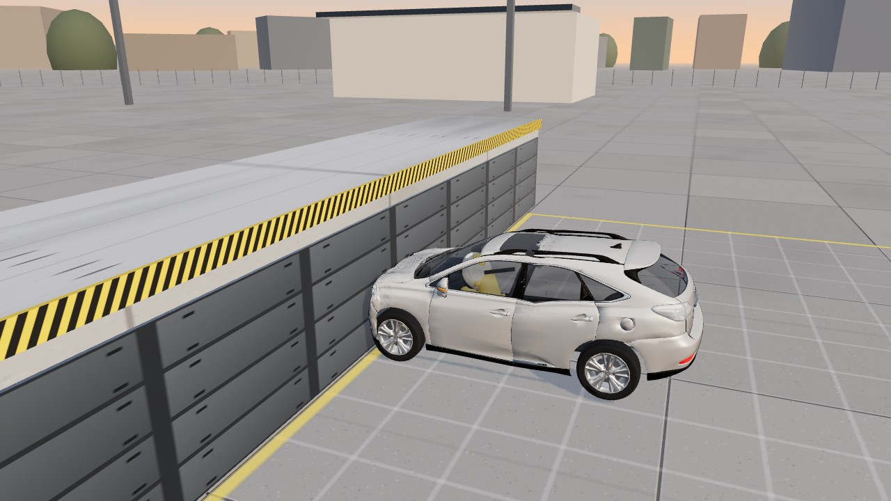
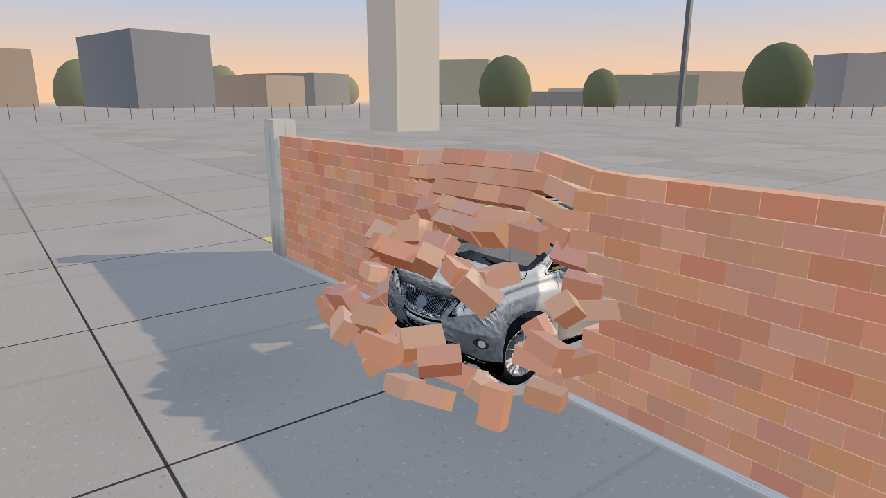
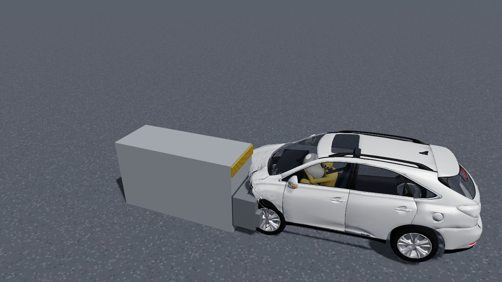
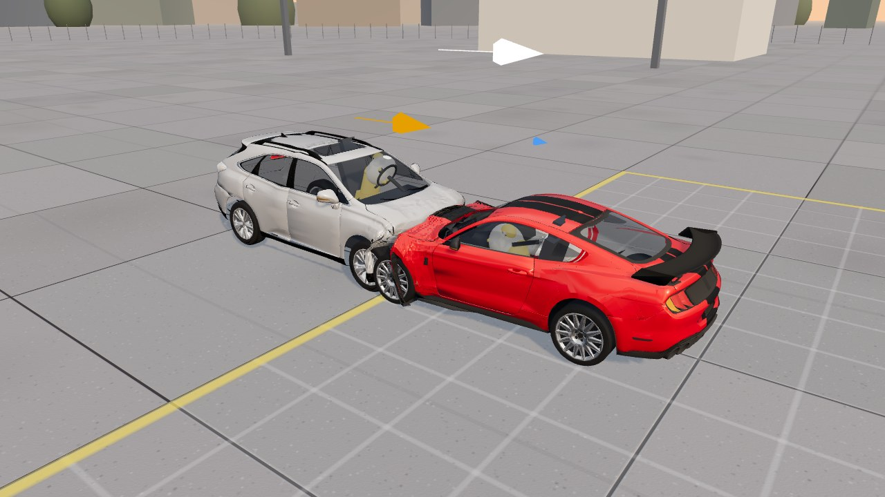
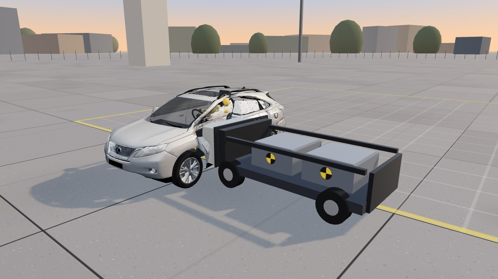
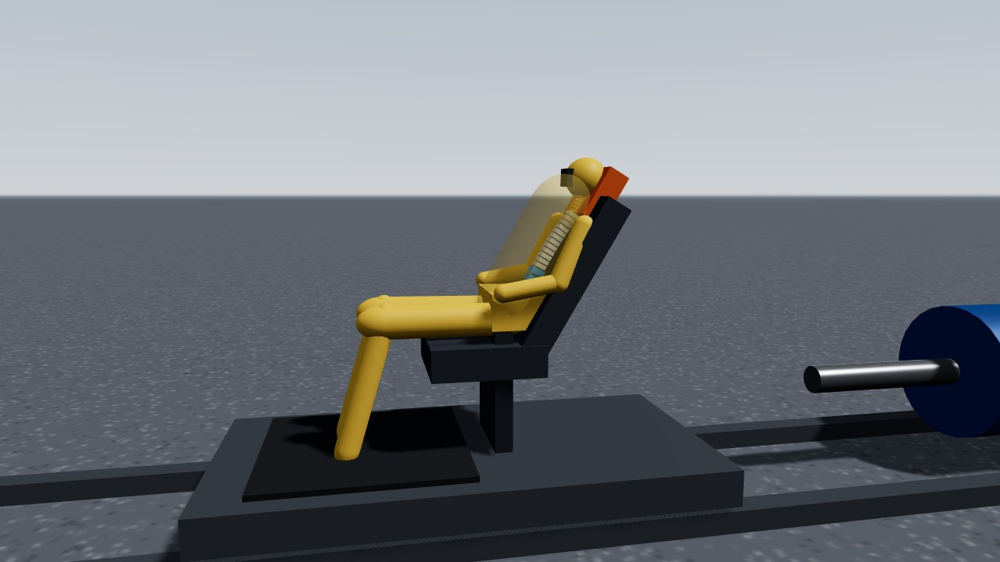
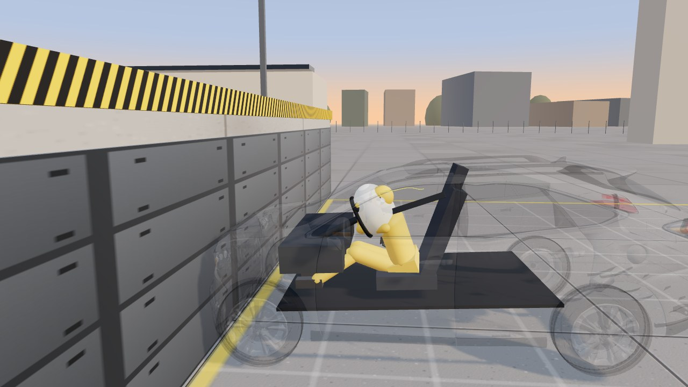
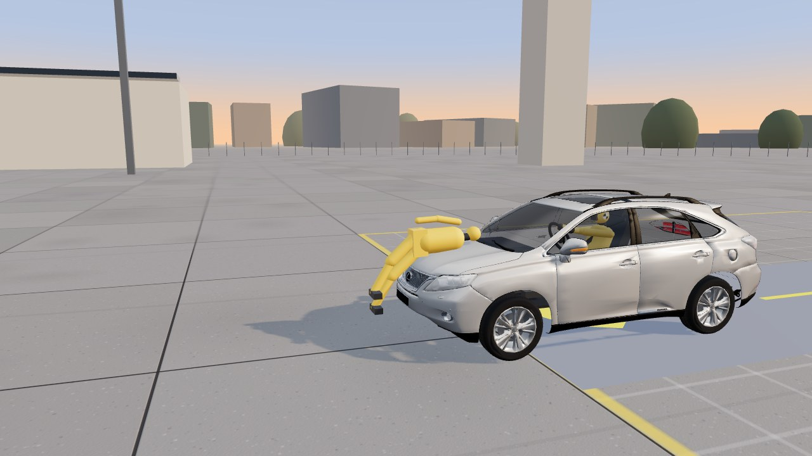
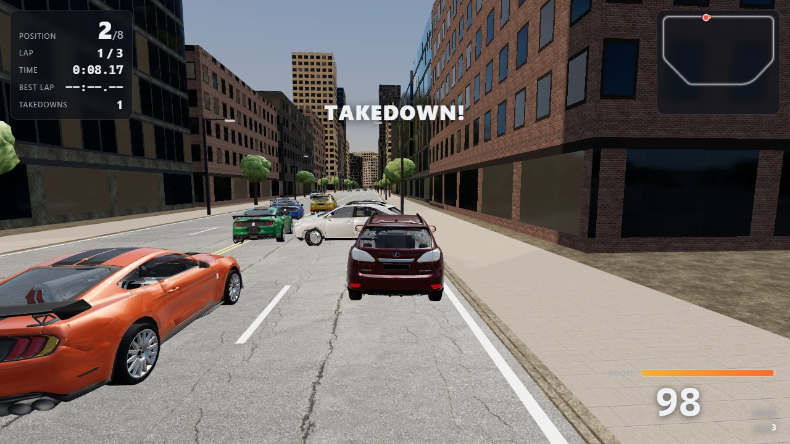

Trailer · real runs of the simulator
Physics-based crash testing in the browser
Car CrashSimulation
Send a Lexus or a Mustang into a barrier, a brick wall or another car at up to 150 km/h, then replay it a millisecond at a time. The structure crumples, panels tear off, glass shatters and a crash-test dummy rides it out, with injury numbers for every test.
The trailer is recorded straight from the simulator: a 150 km/h barrier crash, a two-car head-on, a small overlap, a side impact and the brick wall, replayed in slow motion. The crashes were solved on the GPU (WebGPU), except the brick wall, which the CPU solves. The rock soundtrack was synthesised for the trailer.
Select a test
Eight simulations on the same physics engine: the two barrier tests, and six crash labs set up like real test protocols, each with its own controls, live readouts and charts. Pick one to open it ready to run, then press Run. Inside the simulator, the Simulation menu at the top switches between them.

Rigid barrierFull-frontal barrier test
- Lexus RX 350
- 56 km/h
- Head-on
- Realistic damage
The classic frontal crash test, into a fixed concrete block. The front crumples and the lamps break, while the belt and airbag hold the dummy. The injury numbers from this setup are the ones to compare between settings.
Open this test →
Brick wallThrough a brick wall
- Lexus RX 350
- 64 km/h
- Head-on
- Dramatic damage
A wall of 366 mortared bricks that cracks at its joints and breaks up as the car punches through. Bricks, panels and glass tumble and settle around the wreck.
Open this test →
OverlapFrontal overlap lab
- Lexus RX 350
- 10–50 mph
- 40% or 25% overlap
- Rigid or honeycomb
Hit the barrier with only part of the front. A 40% overlap loads a main frame rail; a 25% small overlap misses it and drives the wheel back toward the footwell. Follow the crash pulse and the steering-column, pedal and toe-pan intrusion, each checked against its limit.
Open this lab →
Two carsTwo-vehicle collision lab
- Two cars
- 0–60 mph each
- Head-on to 45°
- Mass mismatch
Two cars meet head-on or at an angle. They share the momentum, so the lighter car changes speed the most. Compare each driver’s speed change (Δv) and injuries, and watch the kinetic energy turn into bent metal and heat.
Open this lab →
Side impactSide impact lab
- SUV-height barrier or pole
- Mild or hot-stamped steel
- Curtain airbag
A barrier trolley or a rigid pole strikes the driver’s door. Swap the B-pillar steel and watch the intrusion (flagged over 15 cm), the curtain airbag deploying, and the side-impact dummy’s rib deflection.
Open this lab →
Rear impactWhiplash sled lab
- 20–30 mph rear impact
- Head restraint backset & height
- 24-vertebra spine
A seat on a sled is shoved forward as if hit from behind. Move the head restraint and see when the head meets it (70 ms or less is good) and how hard the upper spine is pushed (9.5 g or less).
Open this lab →
RestraintsOccupant restraint lab
- 35 mph barrier
- Unbelted, belt, or belt + airbags
- Head path & organs
Every crash is three collisions: car into barrier, occupant into the restraints, organs inside the body. Compare head injury and chest compression with and without belts and airbags, and follow the head’s path frame by frame.
Open this lab →
PedestrianPedestrian & emergency braking lab
- 12–37 mph
- Adult or child
- Steel or foam bumper
- Emergency braking
A pedestrian steps into the road. With automatic emergency braking the car’s radar and camera see them, warn and brake; without it the car arrives at full speed. Compare head and leg loads with a steel and an energy-absorbing bumper.
Open this lab →Game modes
Take the wheel yourself. Crashes go through the same crash physics as the simulations.

RaceRace
- 8 cars
- 3 laps
- Two-way traffic
- Jumps and hills
- Keyboard or Xbox controller
Three laps of a hilly city street circuit against seven rivals, through traffic going both ways. Jump the ramps, and knock over street lights, cones, bins and hydrants on the way. Near misses, drifts, driving in the oncoming lane and takedowns fill your boost. Every hit wears your health down. When it runs out, the full crash physics works out the damage in the background while a slow-motion crash camera plays it back. The race carries on meanwhile, and at the end you can watch your last crash again.
Play Race →Needs an internet connection: the 3D engine loads from a public CDN. Works best in a recent Chrome, Edge, Firefox or Safari on a laptop or desktop.
Under the hood
The crash is a physics computation, not a canned animation. Change the speed, the angle or the car and the outcome changes with it.
A structure that crumples
Each car is a lattice of 700 to 1,000 nodes joined by springs that yield and stay bent: a soft crumple zone, a stiff passenger cell and an engine block. The 3D model dents where the metal does.
The lattice → 0.1ms stepsSmall steps, real stiffness
The impact is solved with extended position-based dynamics (XPBD) in 0.1-millisecond steps, fine enough for the filters crash tests use, with plastic flow that keeps the steel bent.
The solver → 366bricksParts, glass and bricks
Bumpers, hood, doors and mirrors tear off when their mounts give way. Windows shatter, tyres burst, wheels break away, and a wall of 366 mortared bricks cracks at its joints.
Destruction → HIC15Nij · VC · femurA crash-test dummy
A seated 3D dummy with a belt and an airbag, inside a cabin that deforms around it. It reports head, chest, neck and femur loads against standard limits.
Injury models → 28parallel groupsSolved on your GPU
WebGPU compute shaders can run the car's lattice on the graphics card: the springs are split into about 28 colour groups that are each solved in parallel.
The GPU solver → 1/40×replay speedBullet-time and analysis
Replays slow to 1/40 speed around the peak of the crash, with camera shake and 3D sound. Charts show the crash pulse, crush and energy; a strain map colours the bent metal.
Bullet-time →The garage
Two real cars, split into their actual panels, plus a simple reference car.
Lexus RX 350
The default car. Its bumpers, hood, fenders, four doors, tailgate, mirrors, lamps and nine glass panes are all separate parts.
Ford Mustang GT500
A low sports coupe with a long front overhang: a longer crumple zone, a softer crash pulse and a visible engine when the hood comes off.
Lab sedan
A plain generated body that deforms but has no separate parts. It is the physics baseline that every change is checked against.
Pick a car.
Hit Run.
Open the simulator, pick a car and a speed, and press Run.